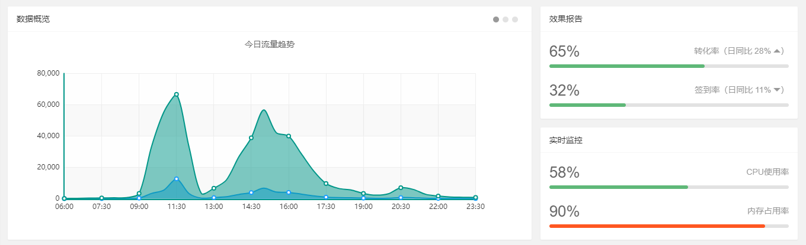

又到九月份了，上个月就匆匆写了一篇关于技术选型的文章，也没什么结束总结，一个月就过去了，转眼又到了9月份，也不知道最近是怎么了，总是有好多想法，感觉上个月那篇还没说够，就想再聊一篇，本来打算着这篇聊一下jwt的，但还是决定在感性一篇，下篇再回到正规。
上篇我聊了的那些，是在一个情绪比较激动的情况下写的，可能有失偏颇，今天咱在理性的聊两句。
因为我们的开发平台基本是.net（不是.net core）平台，所以，基本.net平台下的开发框架都有涉及，但就目前来看，主要还是分了两大块，winform和webform，分别开发线下和线上的两个方向。
cs的部分我目前没见过公司的工程文件，不好评价，但是成型的产品还是见过的，就我看到的来说，功能呈现的真的很一般，比如客户端没有分发更新的功能，这是个很大的槽点，因为我们的这些应用是在大型的会场使用的，所以出现问题后，就要拿着U盘挨个去更新，当然，可能是为了刺激大家多运动，所以没有做自动分发的功能（关于实现分发的功能，我之前有写过一篇叫“一个简单的Socket小工具”的文章(传送门：https://tony_df.gitee.io/hexo/2018/10/08/%E4%B8%80%E4%B8%AA%E7%AE%80%E5%8D%95%E7%9A%84socket%E5%B0%8F%E5%B7%A5%E5%85%B7/)，就可以实现双向通信从而完成分发的功能），而且这些项目只是自用，所以也无所谓了，反正麻烦的也是自己。还有就是，服务端的程序搜集的数据竟然不是自动处理，可能我不太清楚内部的逻辑是怎样的的，但在我看来，数据的汇总，归类这些操作都应该是自动化，实时化的，像这样

也就是当基础数据进来后，比如我们的基础数据是不同赛事的比赛成绩，不单单是一个数据的录入的过程，我们一般情况下会实时的去统计这些数据，做一些可视化的操作，可以实时导出，分析比赛情况的功能，而不是等到数据录入结束在去统一的汇总，当然了，可能有具体的业务需求，或者其他因素，但正常来说，数据的汇总和统计，都应该是实时的才合理。
再有就是大的层面来看，winform客户端是否是最好的选择，首先，现阶段的winform程序（到.net core 3.0才会支持winform）是肯定只能运行在Windows主机上的，而我所了解的实际情况是，当前团队所研发的winform程序并没有什么复杂的功能和逻辑，无非就是一些人脸识别，叫号之类的操作，属于一个单线程任务，那么为了这样一些相对单一，简单的功能，要提供相对昂贵的Windows主机，是否合适，比如我们要跑10套客户端，就要准备10台Windows主机，市面上普通的，体积较小的windows主机的平均价格大概在2000元~3000元之间。那么如果你要考虑研发成本的话，这样的选型是否合适，当然，做软件，一定是要考虑成本的，如果你只考虑你开发的东西能流畅的运行，而不考虑运行环境，不考虑成本，那的确是有点太不专业了。
上面的例子，其实完全可以采用java或者Python（Python也可以写带ui界面的程序）甚至可以用.net core做核心处理程序，这种跨平台语言来做客户端程序，因为你的数据服务是通过接口或者webservice服务和服务器交互，复杂的操作基本都在服务端完成，客户端并没有太复杂的功能逻辑，所以这种工作的迁移是相对比较容易的。
其实所谓的线下，并不是完全的线下，数据层面的交互还是依赖数据中心的服务，所以，基于这种服务端和客户端的软件系统，其实可发挥的地方还是挺多的，不应该局限于某一种解决方案，就说到这；
再来说线上，做过webform的同学都知道，这个东西其实和winform很像，微软为webform框架提供了很多封装好的服务器控件，目的是想让设计网页像设计winform窗口一样简单，但它的局限性也是非常明显的，首先，这个东西肯定是不适合前端深入去研究的，更适合后端人员在网站开发初期的时候，做一下大概的页面设计，据我了解，真正还在使用服务器控件应用在生产环境的系统，已经非常少了，不是说它不好，而是弊大于利；
最大的弊端就是，服务器控件的使用非常消耗资源，他和winform控件一样，是基于事件的，所有动作的触发，都会和服务器产生交互，不知道大家试过没有，在一个webform界面上，放一个服务器按钮控件，什么都不做，就去运行这个界面，你点一下这个按钮，即便你什么都不做，他也会刷新一下，因为他一定会到后台去和服务器做一下交互，即便你什么都没有写，这就会产生很多不必要的网络负载，当你的系统到一定规模后，如果还是用这种方式，那不只是网络负载，服务器的内存资源，也会遭到消耗；
但是不可否认webform框架在过去10年里优异的表现，但是这种优异，是广大开发人员不断深入理解这种设计模式，并不断开发，探索适合这种方式的开发框架，比如我们使用ashx来代替aspx.cs文件，来完成页面解耦，不再使用服务器控件，采用通用的前端框架，通过ajax的通信方式来完成数据交互等等，其实技术没有什么客观上的优劣之分，只有合适不合适，就像8,90年代，人们流行传喇叭裤，花衬衫，在烫个飞机头，那叫流行，现在，你还那种装扮的话，走在大街上，人们会怎么想，“这哥们儿穿越过来的吧”，但你能说他的装扮不好吗，而且，关于webform，微软官方给出的.net路线图里，在2021年左右，将不再推出以.net core命名的框架，而是统一为.net 5.0，在官方给出的路线图里，下个版本的.net 里是没有webform的，因为.net 5将是一个大一统的跨平台版本，既然微软官方都已经舍弃了的东西，也就没什么必要再抓住不放了，所以，webform系统及时重构，甚至重建的规划已经应该提上日程了。
说了半天，好像都是个人的主管想法，也不太对，就这样吧，下篇聊回技术。